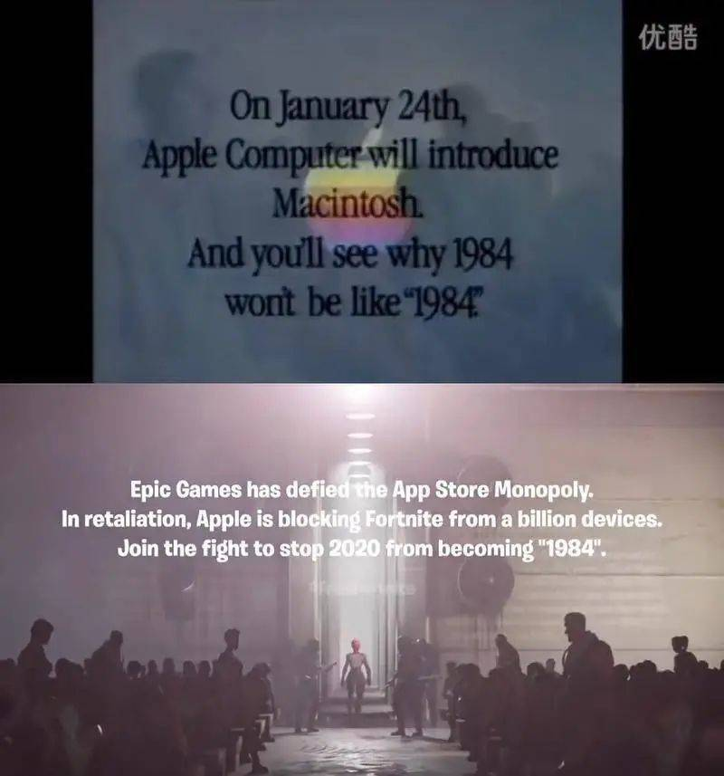
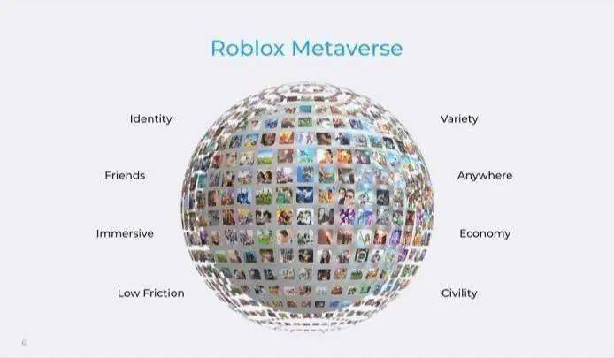
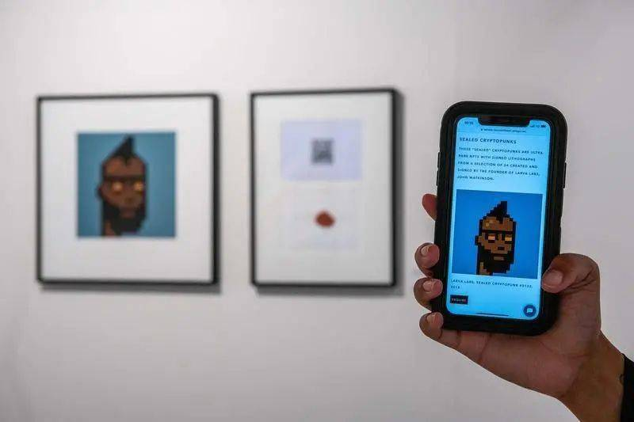

在回答“元宇宙是什么”这个年度热门问题之前，先要回答科幻作品能给现实社会带来怎样的影响？
《金羊毛》的作者罗伯特·索耶在一次分享中表示，科幻就是科学界的“维基解密”，让公众更加了解那些前沿研究的潜在意义。“科幻作者并不是凭空想象，我们作出任何推测必须有根有据。很多科幻作者都是在职科学家。”
比如，“元宇宙”一词的创造者尼尔·斯蒂芬森在波士顿大学学习过物理学和地理学，对数学、密码学、哲学、货币和科学史等都有所涉猎。在写作科幻小说《雪崩》的同时，斯蒂芬森也为各类杂志撰写技术文献，并且在贝佐斯的蓝色起源公司担任发展载人亚轨道发射系统的兼职顾问。
这位科幻作家在20世纪九十年代出版的作品中，给二十年后的互联网行业准备了两管鸡血——加密货币和元宇宙。《钻石时代》与《编码宝典》中的匿名数字货币体系早已在中本聪的努力下成为现实；《雪崩》中描绘的每个人可以参与并让各色文化相互碰撞的“虚构之地”也几乎触手可及。
1999年，《时代》周刊评选出了50位数字英雄，斯蒂芬森位列其中。让他与诸多技术创新的杰出人物并列的理由是，他的书塑造和影响了整整一批IT人。由此可见，科幻作家编织了一个有关未来的梦，后来者从中获得灵感，将其演变为现实。
这也正是元宇宙席卷全球的力量之源。它以最简洁的表述描绘了最多元的近未来，是不同立场、不同利益相关的人们以当下的社会环境为温床，孕育出的想象的共同体。时代选择了元宇宙，而元宇宙正在塑造新的时代。
《雪崩》出版的年代也是互联网进入公众视野的初始阶段，人们关注这个新生事物能够给政治、经济、人性本身带来的改变，**试图赋予其打破工业时代旧秩序、建立新秩序的崇高使命。**就像尼葛洛庞蒂所言，互联网将会“使组织走向扁平化，使社会走向全球化，也会使控制去中心化，同时还将使人群变得更加和谐”。
深受20世纪六十年代反文化运动影响的一代人对此坚信不疑，他们将自己对未来的迷茫、对现实的愤怒与恐惧消泯于对“电子边疆”的开垦过程中。不同于赛博朋克作品基本范式所展现出的科技末世、阶层对立和悲观主义，这一代人在互联网兴起之初依然保持着科技乐观主义，要把赛博空间建设成为由个人计算机和互联网支撑的理想社会。
经历了数十年的发展之后，由个人计算机和互联网支撑的现代社会并没有如乐观主义者所愿，带来一个去中心化的、平等的、和谐的、自由的社会，反而越来越接近赛博朋克作品中的预言——巨头企业掌握基础设施，年轻人成为板结阶层中的一枚大厂螺丝钉，与数十年前高喊“我们是人，不要被制成任何产品”的美国大学生如出一辙。
只不过，除了工业界和官僚机构，一部分互联网的先驱者也正在演化成旧体系的新支柱，背弃了最初的理想。这一切就像1984年的苹果会在广告中告诉你因为有了MAC电脑，“1984 won’t be ‘1984’”，2020年的苹果却在Epic广告中成为“make 2020 becoming ‘1984’”的始作俑者。社会情绪促使人们渴望通过技术迭代、思想变革和创业实现新的突破。

**元宇宙所代表的一个能够脱离躯体、机构和时代束缚的新乌托邦，恰好成为这种社会情绪的具象化体现。**这种体现在反文化运动中，是75万美国年轻人反土归田，在乡村地区建立的远离体制、远离都市集体公社；在互联网兴起的时代，是被定义的个人计算机、虚拟社区、赛博空间和电子边疆。这些体现背后是同一种理念或情绪的延伸。
在这个由技术演进、社会反思和个人诉求凝聚而成的想象的共同体下，包容了崇尚理想化平等与自由的极客、在巨头夹缝中寻求建立新秩序的创业者、试图延续商业霸权的既得利益者、鼓吹新事物的媒体、丧失生活意义的迷茫年轻人、追求利益最大化的投机分子以及想要捞一把的骗子，一起进行一场现代版盲人摸象的展示。
技术的演进是元宇宙这个想象的共同体得以存在的现实依据，同时也在呼唤元宇宙的到来。
风险投资人马修·鲍尔定义的元宇宙框架包含八个技术栈：硬件、网络层、计算力、虚拟平台、协议和标准、支付方式、元宇宙内容服务和资产、消费者行为。如果将其进行分类，硬件、网络层、计算力是奠定元宇宙根基的技术基石；虚拟平台、协议和标准、支付方式是搭建元宇宙的框架；元宇宙内容服务和资产、消费者行为则是对元宇宙的具体应用。
前两个分类的完善都需要依靠技术的演进。云计算为元宇宙提供了算力和存储的解决方案，得以将个体与算力进行解绑。区块链的诞生为元宇宙提供了一套确权和交易体系，以支撑跨圈层、跨生态的价值交换。AI技术的发展将进一步解放个体的生产力和创造力，保证内容创作生态的丰富和数量。
**但是，人们对元宇宙的质疑也基本源自现有技术的局限，**比如AR/VR头显难以长时间使用；算力无法承载上十亿规模用户的同时接入；网络难以给云游戏带来更快地接入体验；AI与人的交互常常处于智障状态等。即便是被很多人视作人类迈向元宇宙第一步的云游戏，也依然处于起步阶段，并没有给人带来体验的提升。

在云游戏技术服务商蔚领时代CEO郭建君的介绍中，云游戏的传输和算力成本比较高，区块链挤占了一部分GPU资源，网络门槛又制约了云游戏用户并发率的提升。更为重要的是，现有的游戏需要每一个玩家都有一个客户端运行，成本成线性增长，并不适合做云游戏，需要CP参与建立一套新的游戏结构，降低云游戏的运行成本。
把时间维度拉长，技术的变化与演进就不应局限在AR/VR等显示端技术何时能够迎来技术上的里程碑式突破，也不受制于强化学习和无监督学习何时迎来天使一吻，**而是如何为更大多数的人提供创造的能力，让他们不考虑算力和算法就能将想象变为现实。**元宇宙恰好是对这个技术发展未来的最佳表述。
20世纪六十年代的年轻人曾寄希望于将离群索居的公社连接起来组成一个人人平等的小型王国。元宇宙对于这个理想的升级就是通过提供场景和工具降低创造门槛，尝试让每个人都成为大世界或者一个小世界的构建者，从而拥有自己的世外桃源。而以此作为最终评判标准，人们可以更准确地判断出谁才是一个属于元宇宙时代的产品。
需要注意的是，以技术降低创造门槛仅完成了整个元宇宙闭环的一半，**另外一半则是建立一个贯通虚拟与现实的市场，让用户的创造产生价值，以此来激发用户的创造力，实现完整的闭环。**从目前来看，区块链技术更适合成为达成这一目标的工具。这也是NFT在炒作之外的现实意义所在，它可以为每个人的作品确权，并产生被现实社会认可的价值。
一定程度上来说，在这样的市场体系下，现实社会也只是元宇宙的一部分。而且，只有承认现实世界与虚拟世界之间的打通，才能在交互方式相当不完美的现在让人们在虚拟世界中实现最初的创造价值的流通。这就像是Loot的流行，虚拟世界中八行文字描述出来的装备没有具现化的体验，如果不能换取美金，就只是一个简单设定。
这种基于NFT的价值链接存在不足。从数字货币和NFT的两轮火爆来看，投机客带来了大量的泡沫。动辄数万美元购买一个NFT头像的行为引发的是关于“智商税”“大骗局”“昙花一现”的讨论，也还没有衍生出易凯资本CEO王冉描述的那种“浩大的社会实践”，让Loot在未来有可能成为元宇宙中的第一代跨平台、跨游戏的装备。

究其原因，**每一轮热炒都缺乏实际的场景，但发起者和积极参与者又特别希望通过创造新名词来标榜自己与旧世界的完全割裂。**事实却是，大部分人还是会基于已有的经验来理解一个新的概念，就像我在看到Loot的消息时完全不能理解这种古早的桌游产品为什么会如此受追捧，直到我看了王冉的文章。
至于加密猫、Axie Infinity这种易于理解的区块链游戏，又只不过是一轮又一轮的挖矿博彩游戏，和元宇宙之间的联系可能只是大家都用了区块链技术。在处理了98%的NFT交易量的OpenSea平台上，大部分交易都来自于CryptoPunks和Bored Ape Yacht Club等知名项目，且这些项目的交易量在经历了8月的大涨之后，出现了明显下滑。
依靠收藏炒作和博彩游戏难以建立真正的流通生态，区块链技术并不能为此提供解决方案。**需要被解决的核心问题是用户可以在哪里完成创造，并让自己的创造被更多人知晓。**所以结论是区块链是打通虚实之间价值链的充分条件，并不是必要条件。
抛开科幻作品影响的理想主义情结回归科幻的理性推测，元宇宙并不是漫无边际的幻想，而是一个正在发生和发展的进程。
“通往元宇宙的门票可能五花八门，**但去往元宇宙的意愿和冲动首先要来自内容，而不是介质。**事实上，元宇宙是可以跨介质的，无论你从什么终端上登陆，也无论你是AR /VR /MR 还是只是简单的二维，都可以进入元宇宙。”王冉在文章中分析道。“但前提是，元宇宙里要有吸引你留下来的东西。”
从更宽泛的维度来进行讨论，大部分人都已经将一只脚踏入到了虚拟空间中，这就像抖音上出现了两个茶卡盐湖，一个很美丽，一个很荒凉。越来越多的年轻人正在试图通过新技术带来的新职业逃离重复且枯燥的工作与生活，在虚拟空间中获得收入，为现实生活提供支出。
“人类的确有一个未来，这个未来还将延续百年、千年，甚至百万年。这就是科幻小说预言最重要，也是最简单的一点。人类一定会有一个未来——或许这种坚定的信念才是最重要、最奇妙的预言。”索耶说道。